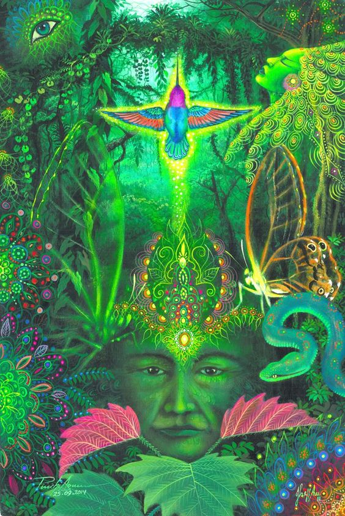

14 Научиться любить.
Во время моей практики по подъему энергии кундалини я "увидела", что под левой лопаткой возникло "затемнение". Естественной моей реакцией было собрать энергию света в этом месте, я старалась "просветить" энергией данный участок. При этом я подняла руки и сложила их над головой - опытным путем я наткнулась на то, что в таком положении гораздо проще заполнить энергией и воздухом это место.
Летом, когда я гуляла в лесу, почувствовала, что что-то не так в области чуть левее сердца. В это время я практиковала подъем энергии кундалини. Дойдя до солнечного сплетения, поток останавливался. Что-то ему мешало в районе "чакры анахаты". Я спросила у леса, в чем моя проблема, и получила ответ:
- Ты не можешь поднять энергию через эту точку , поскольку не чувствуешь любовь ни к чему.
Тогда я начала перебирать всех, кого знала, но не нашла ни в прошлом ни в будущем такого человека, к которому бы чувствовала чистую бескорыстную любовь, без примесей. Вспомнила о родственниках и поняла - что это не то, что там была любовь смешана с чувством жалости и рядом других чувств, явно не подходящих для этой практики. Не найдя никого в мире людей, я сначала отчаялась - что я за демон такой безразличный ко всему сущему, затем сообразила: помимо мира людей есть еще мир животных и растений. Я вспомнила свою собаку, которую искренне люблю. Но и это не помогло - я почувствовала боль от того, что однажды ее утрачу. Тогда я создала внутри себя собирательный образ собаки - любящей без всяких почему, любящей и не мечтающей уложить человека в прокрустого ложе - вылепить из него то, чем по ее мнению он должен быть. И я сама почувствовала большую любовь к этой собаке, в этот момент свет полился через темный участок.
Невероятно, но факт: через некоторое время я действительно встретила в нашем дачном поселке примерно такую собаку, которая нуждалась в помощи. Хозяин погиб от несчастного случая, пес остался один, выброшенный на улицу. Каждый день я носила ему еду и помогала. По осени дачникам удалось пристроить его в приют.
Через некоторое время я вновь обратилась к духам леса:
- А можно, я буду любить вас? Пожалуйста, научите меня, как вас полюбить.
В ответ словно каждое дерево протянуло ко мне сияющие нити и обняло. Я ощутила волну любви и душевной теплоты. В этот момент энергия прокатилась лавиной... На глазах выступили слезы, я плакала от счастья.
Затем вместо образа собаки я подумала о Земле как о живом существе, которое всегда присутствует с нами и почувствовала к нему большую любовь. В этот момент я "увидела" как сквозь меня проходят энергетические потоки, словно я была ситом. Я почувствовала себя абсолютно невесомой, ощутила, что растворяюсь во всем, становлюсь каждой пылинкой вокруг меня, чистым светом. В какой-то момент я ощутила, что энергия заполняет позвоночник и пытается вырваться. Я вовремя успела выпрямить шею и наклонить голову, когда почувствовала давление в области ближе ко лбу, в результате чего энергия прошла по прямой. В иных случаях, когда энергия выбирала неверную траекторию, мне бывало тяжело открыть глаза, ощущение тяжести в голове и сжимающего обруча могли сохраняться подолгу.
Для подъема энергии я несколько раз еще делала "проброс энергии" из верхнего сердечного центра вниз. Если сделать это довольно быстро и стремительно, верхняя энергия вступает во взаимодействие с нижней, возникает некая "термоядерная реакция", напоминающее гашение соды в гигантской кастрюле, в результате чего нижней энергии становится некуда деваться и она поднимается по позвоночнику.
